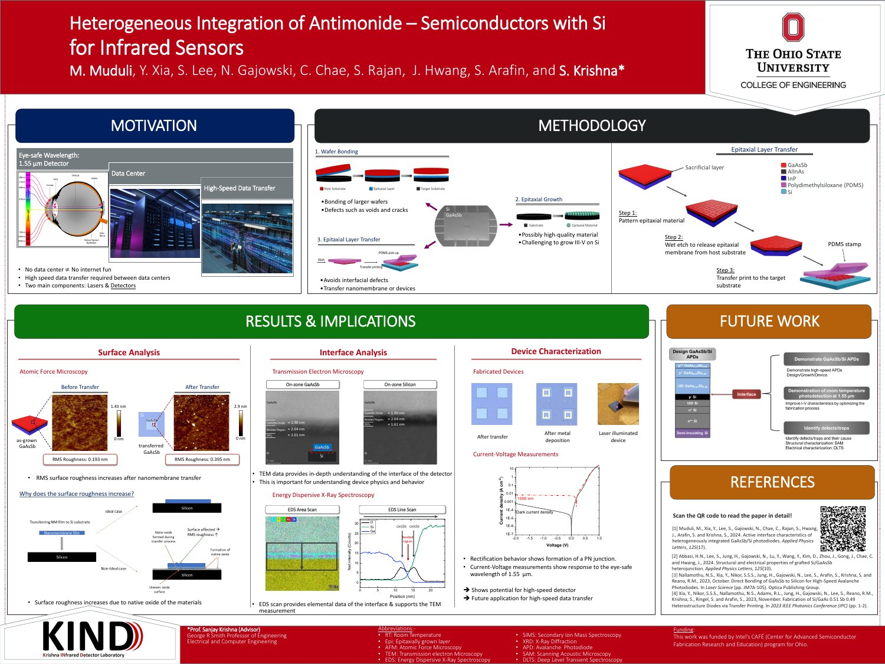

September 26, 2025
Heterogeneous Integration of Antimonide–Semiconductors with Si for Infrared Sensors
Kraus Poster Competition
An annual Ohio State ECE competition where graduate students present and discuss their research through posters.
The Ohio State University